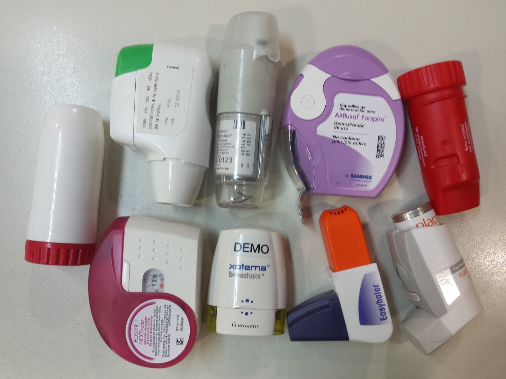

Un aspecte fundamental en la terapéutica de la fibrosis quística és el control el tractament del dany pulmonar causat per la mucositat espesa i per les infeccions, amb l’objectiu de millorar la qualitat de vida del pacient. Per el tractament de les malalties cròniques i agudes s’administra Antibiótics per vía intravenosa, inhalatoria i oral. També s'utilitza dispositius mecànics i fàrmacs (en forma d’inhaladors) per controlar les secrecions i d’aquesta manera descongestionar i obstruir les vies respiratòries. Altres aspectes de la terapia es relacionen amb el tractament de la diabetis amb insulina, de la malaltia pancreática amb un canvi enzymatic.Adicionalment, es confía en diferents processos, com el transplant i la terapia genética, per ajudar a resoldre alguns efectes associats a aquesta malaltia
